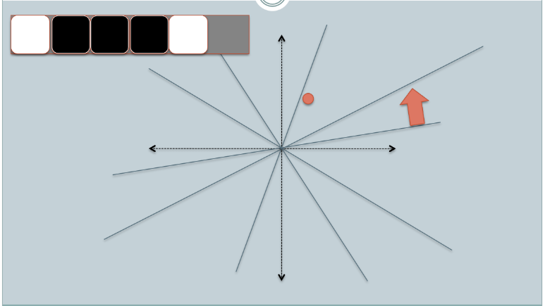
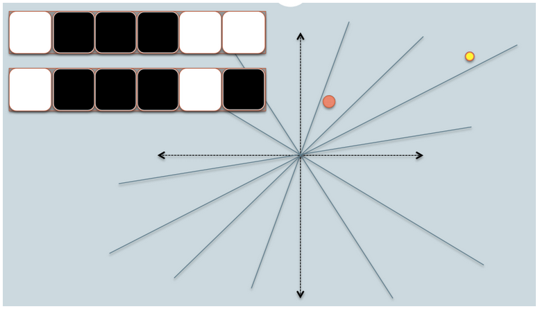

Locality-sensitive hashing using Cosine Distance
In another chapter of my tutorial
(minHash), I described LSH based on Jaccard distance, here, we'll do the same thing but with different distance measure called cosine distance.
This chapter is based on Online Generation of Locality Sensitive Hash Signatures and How to understand Locality Sensitive Hashing?.
Here is the code for LSH based on cosine distance:
from __future__ import division
import numpy as np
import math
def signature_bit(data, planes):
"""
LSH signature generation using random projection
Returns the signature bits for two data points.
The signature bits of the two points are different
only for the plane that divides the two points.
"""
sig = 0
for p in planes:
sig <<= 1
if np.dot(data, p) >= 0:
sig |= 1
return sig
def bitcount(n):
"""
gets the number of bits set to 1
"""
count = 0
while n:
count += 1
n = n & (n-1)
return count
def length(v):
"""returns the length of a vector"""
return math.sqrt(np.dot(v, v))
if __name__ == '__main__':
dim = 20 # dimension of data points (# of features)
bits = 1024 # number of bits (planes) per signature
run = 10 # number of runs
avg = 0
for r in xrange(run):
# Generate two data points p1, p2
pt1 = np.random.randn(dim)
pt2 = np.random.randn(dim)
# reference planes as many as bits (= signature bits)
ref_planes = np.random.randn(bits, dim)
# signature bits for two data points
sig1 = signature_bit(pt1, ref_planes)
sig2 = signature_bit(pt2, ref_planes)
# Calculates exact angle difference
cosine = np.dot(pt1,pt2)/length(pt1)/length(pt2)
exact = 1 - math.acos(cosine)/math.pi
# Calculates angle difference using LSH based on cosine distance
# It's using signature bits' count
cosine_hash = 1 - bitcount(sig1^sig2)/bits
# Difference between exact and LSH
diff = abs(cosine_hash-exact)/exact
avg += diff
print('exact %.3f, hash %.3f, diff %.3f') %(exact, cosine_hash, diff)
print('avg diff = %.3f') %(avg/run)
Output:
exact 0.477, hash 0.447, diff 0.062 exact 0.439, hash 0.454, diff 0.035 exact 0.433, hash 0.467, diff 0.077 exact 0.503, hash 0.522, diff 0.040 exact 0.583, hash 0.613, diff 0.052 exact 0.490, hash 0.494, diff 0.009 exact 0.563, hash 0.570, diff 0.014 exact 0.482, hash 0.479, diff 0.006 exact 0.506, hash 0.521, diff 0.029 exact 0.485, hash 0.479, diff 0.010 avg diff = 0.033
The code has two important parameters:
- dim - This is the dimension of data points which are the features. These are generated using NumPy's random function:
pt1 = np.random.randn(dim) pt2 = np.random.randn(dim)
We created two points to test the similarity. - bits - This is the number of bits (planes) per signature. The reference planes are generated as many as bits.
ref_planes = np.random.randn(bits, dim)
These bits are used as signature bits for the points we are interested in their similarity. These signature bits of the two points are different only for the plane that divides the two points. as we can see from the function signature_bit():sig = 0 for p in planes: sig <<= 1 if np.dot(data, p) >= 0: sig |= 1 return sig
We run the code several times to get averaged difference, and it's because for each we're testing with different points and different features.
The following pictures are from Online Generation of Locality Sensitive Hash Signatures and descriptions are from How to understand Locality Sensitive Hashing?.



- In the figures above, there are two circles w/ red and yellow colored, representing two two-dimensional data points. We are trying to find their cosine similarity using LSH.
- The gray lines are some uniformly randomly picked planes.
- Depending on whether the data point locates above or below a gray line, we mark this relation as 0/1.
- On the upper-left corner, there are two rows of white/black squares, representing the signature of the two data points respectively. Each square is corresponding to a bit 0(white) or 1(black).
- Online Generation of Locality Sensitive Hash Signatures has more picture on each step.
- So once we have a pool of planes, we can encode the data points with their location respective to the planes. Imagine that when we have more planes in the pool, the angular difference encoded in the signature is closer to the actual difference. Because only planes that resides between the two points will give the two data different bit value.

- Now we look at the signature of the two data points. As in the example, we use only 6 signature bits(squares) to represent each data. This is the LSH hash for the original data we have.
- The hamming distance between the two hashed value is 1, because their signatures only differ by 1 bit.
- Considering the length of the signature, we can calculate their angular similarity as shown in the graph.
Ph.D. / Golden Gate Ave, San Francisco / Seoul National Univ / Carnegie Mellon / UC Berkeley / DevOps / Deep Learning / Visualization